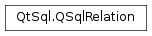

QSqlRelation¶
Synopsis¶
Functions¶
- def
displayColumn() - def
indexColumn() - def
isValid() - def
swap(other) - def
tableName()
Detailed Description¶
The
PySide2.QtSql.QSqlRelationclass stores information about an SQL foreign key.
PySide2.QtSql.QSqlRelationis a helper class forPySide2.QtSql.QSqlRelationalTableModel. SeeQSqlRelationalTableModel.setRelation()andQSqlRelationalTableModel.relation()for details.See also
PySide2.QtSql.QSqlRelationalTableModelPySide2.QtSql.QSqlRelationalDelegateRelational Table Model Example
-
class
PySide2.QtSql.QSqlRelation¶ -
class
PySide2.QtSql.QSqlRelation(QSqlRelation) -
class
PySide2.QtSql.QSqlRelation(aTableName, indexCol, displayCol) Parameters: - aTableName – unicode
- indexCol – unicode
- QSqlRelation –
PySide2.QtSql.QSqlRelation - displayCol – unicode
Constructs an invalid
PySide2.QtSql.QSqlRelationobject.For such an object, the
PySide2.QtSql.QSqlRelation.tableName(),PySide2.QtSql.QSqlRelation.indexColumn(), andPySide2.QtSql.QSqlRelation.displayColumn()functions return an empty string.See also
Constructs a
PySide2.QtSql.QSqlRelationobject, wheretableNameis the SQL table name to which a foreign key refers,indexColumnis the foreign key, anddisplayColumnis the field that should be presented to the user.
-
PySide2.QtSql.QSqlRelation.displayColumn()¶ Return type: unicode Returns the column from table
PySide2.QtSql.QSqlRelation.tableName()that should be presented to the user instead of a foreign key.
-
PySide2.QtSql.QSqlRelation.indexColumn()¶ Return type: unicode Returns the index column from table
PySide2.QtSql.QSqlRelation.tableName()to which a foreign key refers.
-
PySide2.QtSql.QSqlRelation.isValid()¶ Return type: PySide2.QtCore.boolReturns
trueif thePySide2.QtSql.QSqlRelationobject is valid; otherwise returnsfalse.
-
PySide2.QtSql.QSqlRelation.swap(other)¶ Parameters: other – PySide2.QtSql.QSqlRelationSwaps
thiswithother.
-
PySide2.QtSql.QSqlRelation.tableName()¶ Return type: unicode Returns the name of the table to which a foreign key refers.
© 2018 The Qt Company Ltd. Documentation contributions included herein are the copyrights of their respective owners. The documentation provided herein is licensed under the terms of the GNU Free Documentation License version 1.3 as published by the Free Software Foundation. Qt and respective logos are trademarks of The Qt Company Ltd. in Finland and/or other countries worldwide. All other trademarks are property of their respective owners.